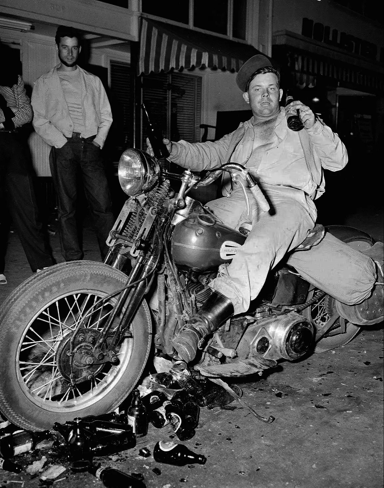

A Harley-Davidson é uma das marcas de motocicletas mais icônicas e reconhecidas mundialmente. Fundada em 1903, a empresa tem uma rica história que reflete inovação, perseverança e paixão pelo motociclismo.
Em 1901 William S. Harley, de 21 anos, desenhou um motor de pequena cilindrada para ser usado em uma bicicleta. Com a ajuda de seu amigo Arthur Davidson, e mais tarde de Walter Davidson e William A. Davidson, os dois construíram sua primeira motocicleta em Milwaukee, Wisconsin. A primeira moto foi concluída em 1903 e rapidamente se destacou pela inovação.
Em 1904 foi inaugurada a primeira concessionária Harley-Davidson em Chicago, vendendo três motocicletas em seu primeiro ano. A resposta positiva incentivou a expansão da produção. Em 1906 a empresa construiu sua primeira fábrica na Chestnut Street (mais tarde renomeada Juneau Avenue), onde a sede corporativa ainda está localizada. A produção aumentou para 50 motocicletas.
Durante a Primeira Guerra Mundial(1914-1918), a Harley-Davidson forneceu aproximadamente 20.000 motocicletas para o exército dos EUA. Este período consolidou a reputação da marca em termos de durabilidade e confiabilidade.
Em 1920 a Harley-Davidson tornou-se a maior fabricante de motocicletas do mundo, com revendedores em 67 países e uma produção anual de 28.189 motocicletas. A empresa foi pioneira na criação de um sistema de rede de concessionárias, garantindo suporte e peças de reposição globais.
No ano de 1929 ocorre a introdução do motor de 45 polegadas cúbicas (750 cc) V-twin, também conhecido como "Flathead", que se tornou um marco na história da empresa.
Durante a Grande Depressão (1930-1940), a Harley-Davidson foi uma das poucas fabricantes de motocicletas a sobreviver, em parte devido à diversificação de produtos, incluindo a produção de motos para a polícia e correios.
Na Segunda Guerra Mundial (1939-1945), a empresa dedicou a maior parte de sua produção para esforços militares, fabricando mais de 90.000 motocicletas. A WLA "Liberator" foi a motocicleta militar mais famosa deste período, usada extensivamente pelas forças armadas dos EUA e seus aliados.
Foi no ano de 1947 que a cultura motociclista começou a se formar com eventos como o rally de Hollister, onde grupos de motociclistas e a popularização dos "bikers" começaram a aparecer na mídia, muitas vezes associando-se a um estilo de vida rebelde.
No ano de 1957 ocorre o lançamento da Sportster, um modelo mais leve e ágil que se tornaria um ícone da linha de produtos da Harley-Davidson.
A American Machine and Foundry (AMF) em 1969 comprou a Harley-Davidson, trazendo uma fase de produção em massa que enfrentou críticas por problemas de qualidade, mas também permitindo a sobrevivência da marca durante uma época difícil para a indústria.
O renascimento da marca ocorreu em 1981 quando um grupo de 13 executivos da Harley-Davidson, liderado por Vaughn Beals e Willie G. Davidson, comprou a empresa da AMF em uma alavancagem financeira. A marca iniciou um processo de reestruturação e melhoramento da qualidade dos produtos.
Em 1990 a empresa lançou novos modelos como a Fat Boy e a linha Dyna, além de atualizar constantemente a linha de produtos com inovações em tecnologia e design.
A Fat Boy se tornou um ícone cinematográfico no filme 'O Exterminador do Futuro'. A cena em que o personagem interpretado por Arnold Schwarzenegger, o T-800, monta uma Fat Boy preta tornou-se icônica, contribuindo para a popularidade e reconhecimento da motocicleta em todo o mundo.
A Harley-Davidson expandiu seu portfólio de produtos para atrair uma base de clientes mais ampla. Além das motocicletas clássicas, a empresa introduziu modelos como a Pan America 1250, sua primeira motocicleta adventure touring, e a LiveWire, sua linha de motocicletas elétricas.
A Harley-Davidson está focada em inovação e tecnologia. A linha LiveWire representa um passo significativo para a empresa no mercado de motocicletas elétricas, com recursos avançados de conectividade e desempenho. Além disso, a empresa continua aprimorando suas motocicletas tradicionais com novas tecnologias, como sistemas de entretenimento e assistência ao piloto.
A marca continua sua expansão global, buscando novos mercados e fortalecendo sua presença em regiões como Ásia, Europa e América Latina. A abertura de novas concessionárias e parcerias estratégicas fazem parte dessa estratégia de expansão.
A empresa enfrentou desafios com a mudança de mercado e a pandemia de COVID-19, mas continuou a inovar e expandir sua linha de produtos, incluindo a criação de novos modelos mais acessíveis e adaptados às necessidades de uma nova geração de motociclistas.
A Harley-Davidson transcende sua identidade como fabricante de motocicletas para se tornar um ícone cultural. Representa valores como liberdade, individualidade e a busca pela aventura. Ao longo das décadas, a marca foi celebrada em filmes, música e literatura, solidificando sua posição na cultura popular.
Com mais de um século de história, a Harley-Davidson continua a evoluir e a influenciar o mundo do motociclismo. A empresa permanece comprometida com a inovação, qualidade e tradição, proporcionando experiências únicas para motociclistas ao redor do mundo. Sua história é uma narrativa de resiliência, paixão e uma dedicação inabalável ao espírito do motociclismo.